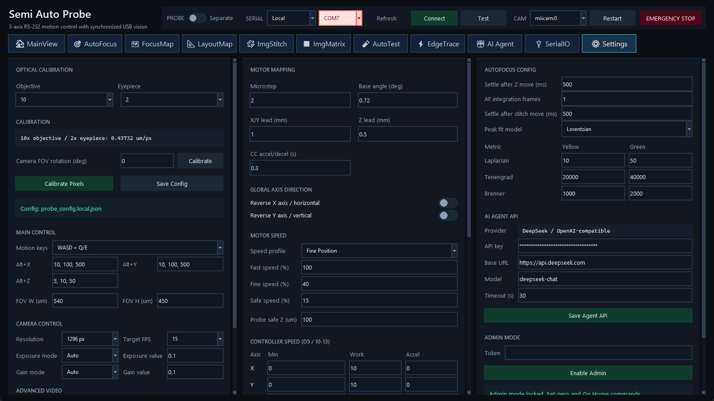

配置文件与生效范围
桌面应用从启动工作目录读取 probe_config.local.json。文件不存在时使用默认值；JSON 无效时应用回退默认并写日志。大多数 Save 操作更新此 UTF-8 JSON；相机参数需要 Apply Camera 重启采集才完全生效。
工作目录很重要。从不同目录启动会得到不同配置和输出根。排查“设置丢失”时先确认进程的当前目录和实际 probe_config.local.json。
左栏：光学、主控制与相机
- OPTICAL CALIBRATION：objective、eyepiece、Calibrate Pixels、Save Config。像素标定按倍率和分辨率保存；更换组合后重新检查。
- MAIN CONTROL：Motion keys、camera FOV、rotation 等主界面行为。
- CAMERA CONTROL / ADVANCED VIDEO：source、resolution、target FPS、exposure/gain/white balance 的 Auto/Manual，以及 temperature、saturation、brightness、contrast、gamma。
Pixel Calibration 使用三点/已知距离对话框；FOV Rotation 可用按钮、slider 或直接输入角度。两者会影响图像↔stage 与 GDS overlay。
中栏：电机
- MOTOR MAPPING：把逻辑 X/Y/Z 绑定到控制器轴。
- GLOBAL AXIS DIRECTION：逐轴反向；修改后必须以小步长现场验证。
- MOTOR SPEED：Fast、Fine、Safe profile 与 active profile。
- CONTROLLER SPEED (D5 / 10-13)：Read D5 X/Y/Z；Apply 10/11 临时写入；Save 12/13 掉电保存。保存会改变控制器长期状态。
- CONVERSION：microstep、XY/Z lead、base angle、safe Z margin、CC acceleration；Apply Mapping 更新 pulse↔距离换算。
右栏：AutoFocus、Agent 与 Admin
- AUTOFOCUS CONFIG：settle ms、sample count、peak model、ImgStitch settle 与 Laplacian/Tenengrad/Brenner yellow/green thresholds。
- AI AGENT API：provider base URL、API key、model、timeout；Save Agent API 写入 local JSON。
- ADMIN MODE：读取
SEMI_AUTO_PROBE_ADMIN_TOKEN；未设置时也可使用 SEMI_AUTO_PROBE_WEB_TOKEN。Admin 只对当前应用 session 生效，解锁 set-zero、Go Home 与 Wire-bond mode。
相机环境变量
SEMI_AUTO_PROBE_CAMERA_SOURCE 可覆盖 config；可用 auto、miicam:0、opencv:0、opencv-msmf:0、opencv-dshow:0、toupcam:0。其他变量包括 ..._COLOR_ORDER、..._FLIP_VERTICAL、..._FOURCC 和 ..._MIICAM_SDK。
敏感信息
agent_api_key 以明文保存。共享电脑优先使用 Agent 环境变量；不要把 probe_config.local.json、token、仪器凭据提交到版本库或放入公开支持包。
相关主题：首次配置 · 运动验证 · 配置排障